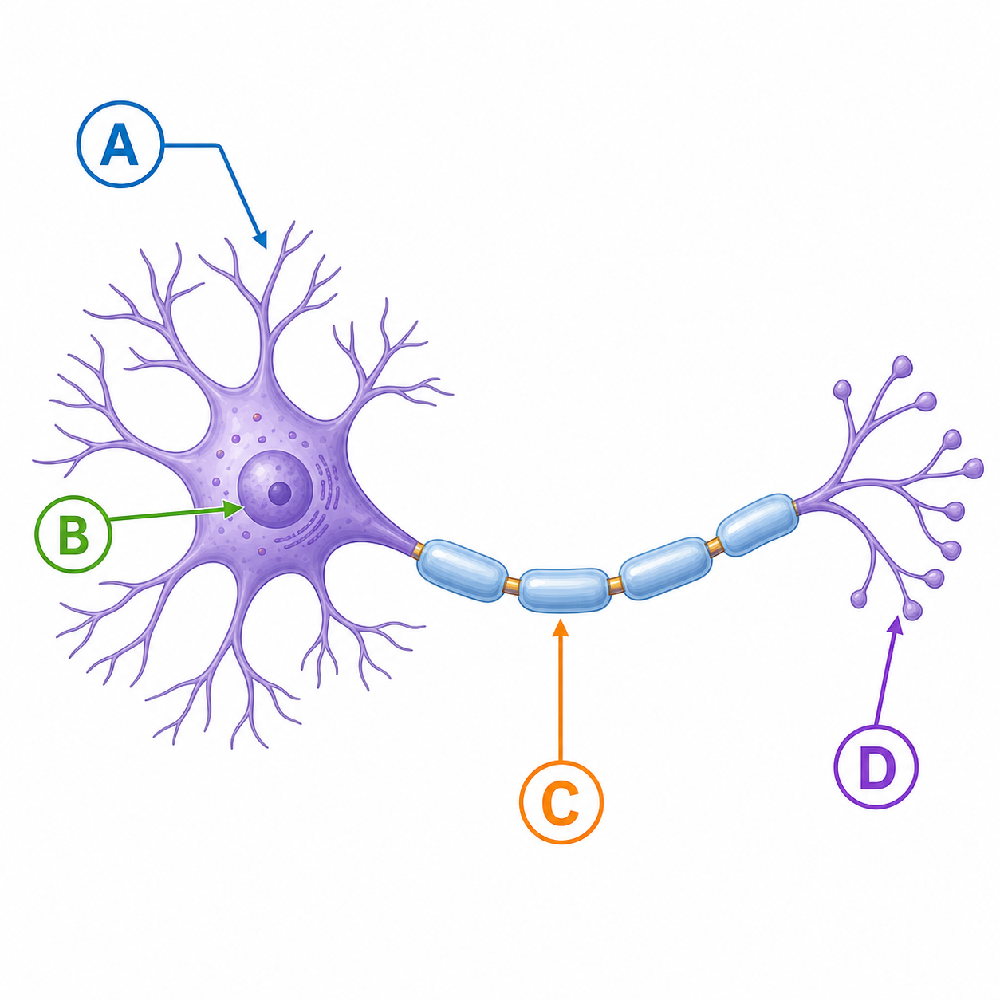
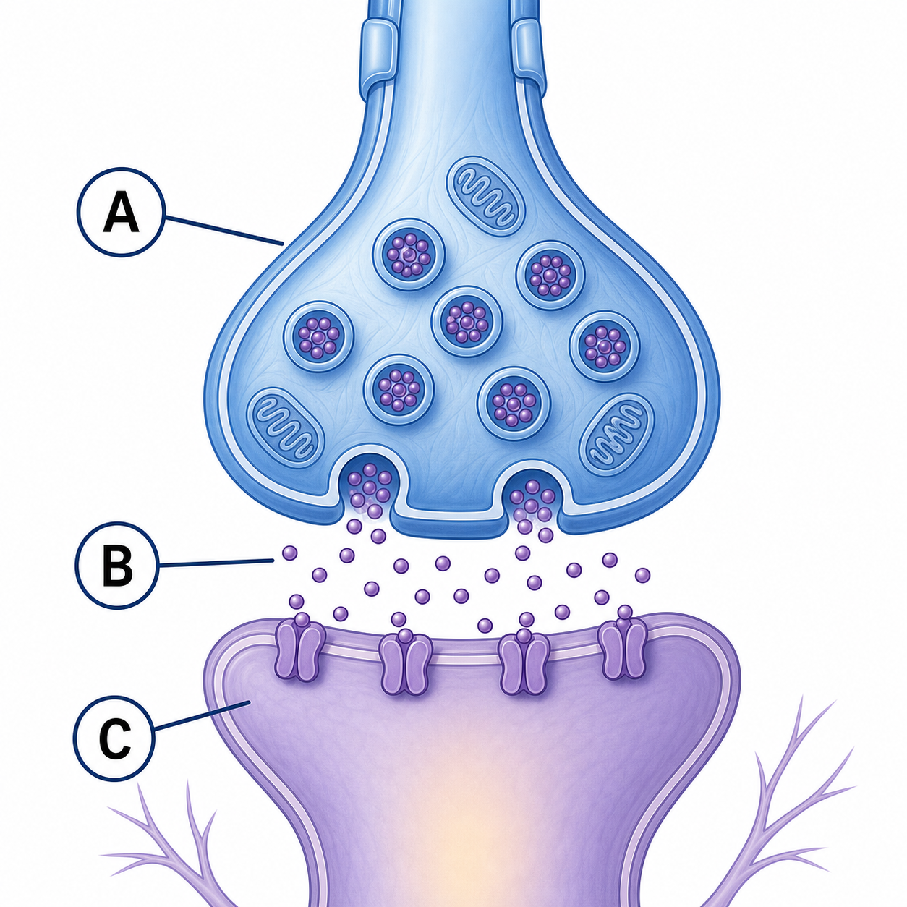
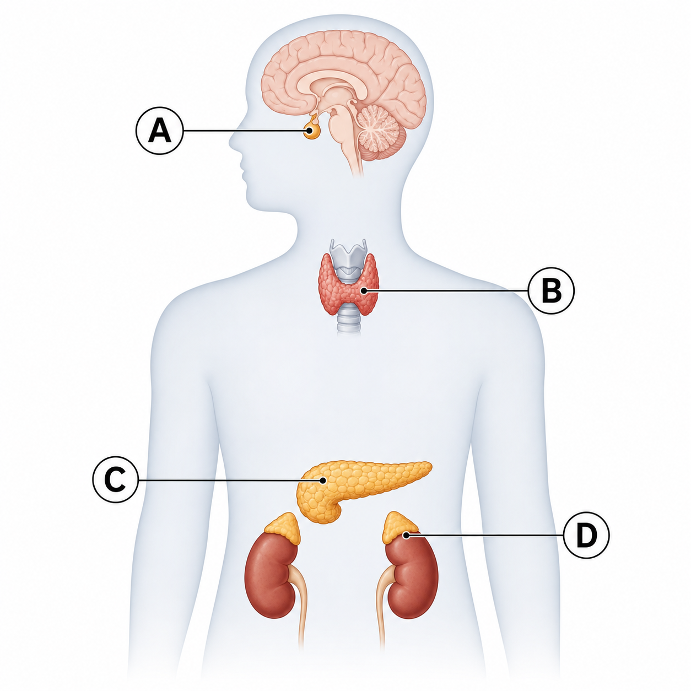
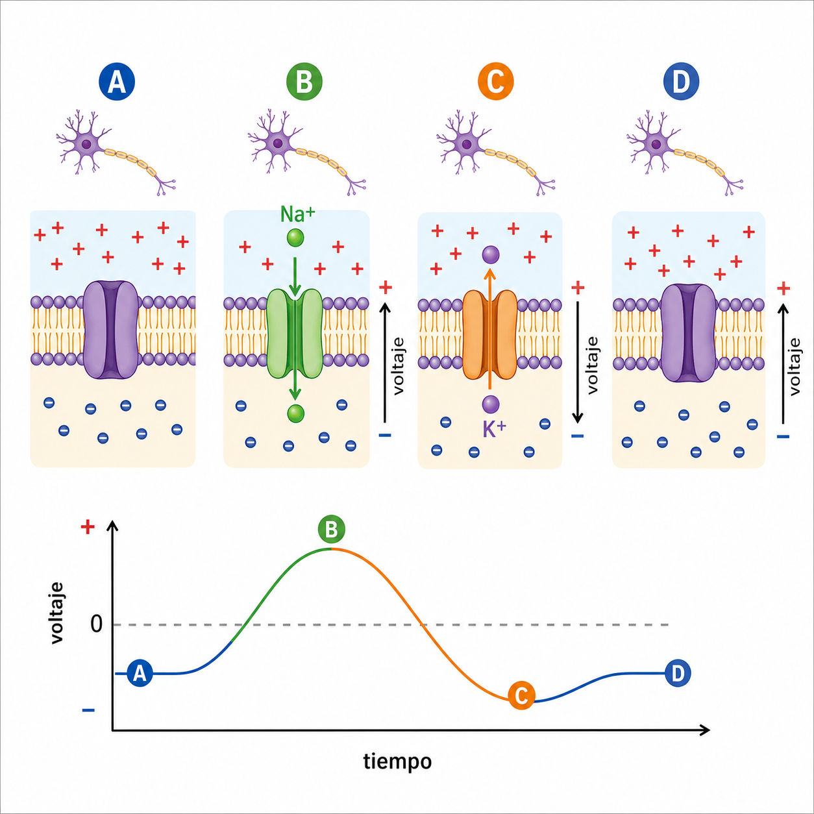

Aquí queda listo el paquete alternativo: imágenes cuadradas publicadas en GitHub Pages y un script de Apps Script que crea un formulario de Google Forms con 12 preguntas adaptadas al contenido exacto de las fichas de estudio.
Copia este código en un proyecto nuevo de Apps Script, guarda y ejecuta la función
create4SU4ExamForm. El script crea el formulario como cuestionario
e inserta las imágenes desde los links públicos de este repositorio.
Temas cubiertos: señales y comunicación, neurona, ruta nerviosa, sinapsis, sistema endocrino, ruta hormonal, potencial de membrana y caso de glucosa/insulina.
Estos links ya quedan públicos vía GitHub Pages. El script los usa directamente para insertar las imágenes en el formulario.



